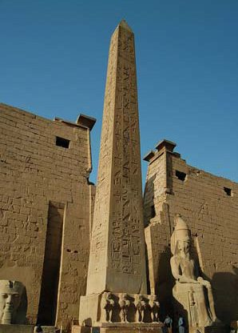
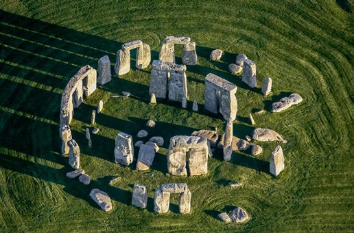
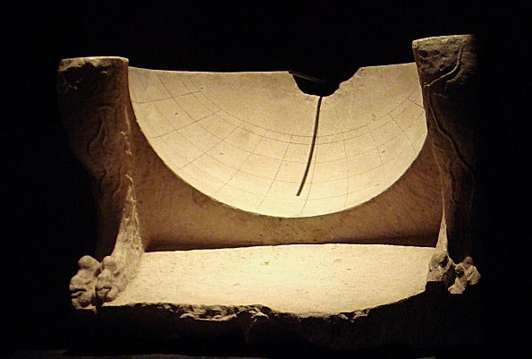
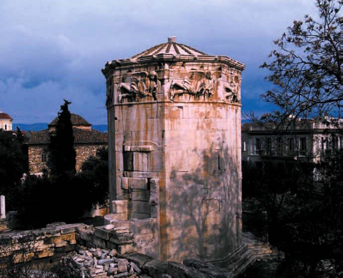
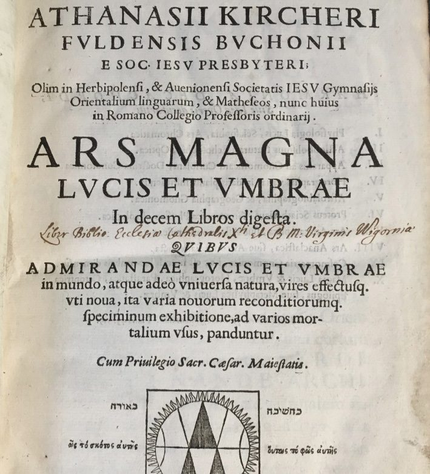

GnomonThe shadow-casting element; also, the one who “knows how to judge”.
Temporal hoursDaylight split into 12 regardless of season — unequal hour lengths.
Two originsBabylonian hours from sunrise; Italic hours from sunset.
Chapter I · 1
A Brief History of the Sundial
From obelisk shadows to Kircher's encyclopaedia: the long, uneven story of the art of light and shadow.
The idea of a sundial is as old as human history; the discipline that studies it is gnomonics, from the Greek gnōmonikē technē — the “art of sundial building”, but also the “art of knowing”. The gnomon is the shadow-casting stick; the word doubles as a term for what produces understanding. From the start the sundial sat where science meets art.




Egyptian obelisks were casting time-telling shadows by 3500 BCE; the oldest known dial, from the Valley of the Kings, dates to about 1500 BC. Greek and Graeco-Roman dials — conical, spherical, the scaphe hollowed like a half-globe — shared one trait: they showed unequal, “temporal” hours, twelve of daylight and twelve of night whatever the season, and only the tip of the shadow marked the time. The eight-faced Tower of the Winds in Athens is the celebrated survivor.
The 24-hour day is an Egyptian inheritance — twelve parts of day, twelve of night, the latter devised to schedule nocturnal prayer. Two parallel counting systems descend from it and will both reappear on the Grenoble ceiling: Babylonian hours counted from sunrise, and Italic hours counted from sunset.
iThe golden age, and the eclipse

Sundial science genuinely flowered during the European Enlightenment. In the mid-1600s the Jesuit polymath Athanasius Kircher published Ars Magna Lucis et Umbrae (Rome, 1646), describing the dial as the noble, widely practised “art of light and shadow”. Gnomonics became both a serious study and a fashionable ornament for aristocratic facades, tightly bound to mathematics and astronomy. It fell from favour again in the 19th century, as mechanical and physical science made it look quaint — and was only re-valued from the 1980s, when gnomonics societies began recording and conserving what remained.